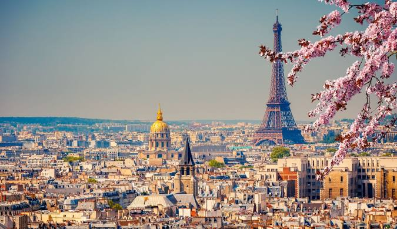
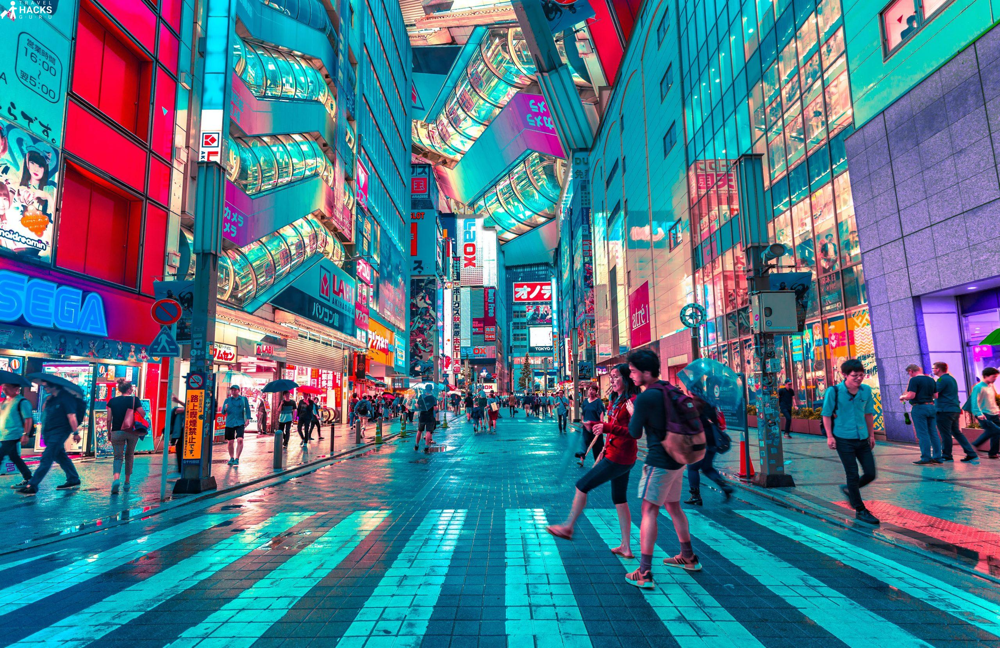
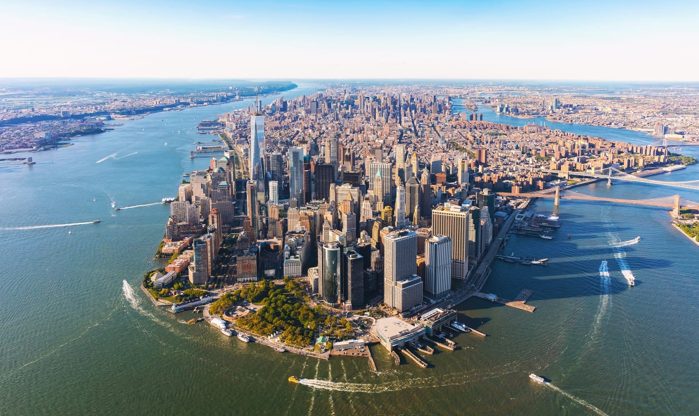
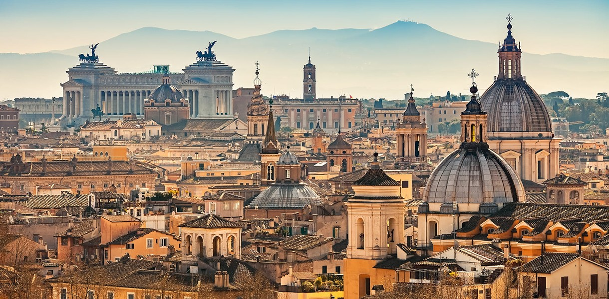
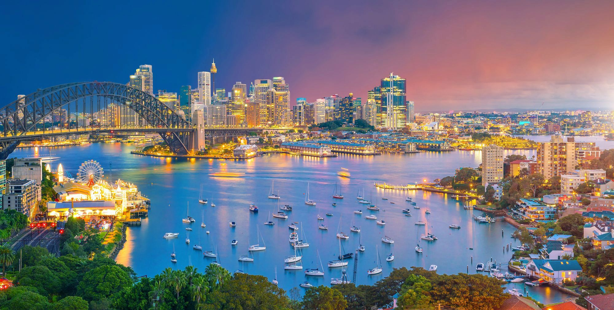

Популярные направления
Исследуйте самые захватывающие места для путешествий по всему миру!
1. Париж, Франция
Париж, известный как "Город света", является одним из самых популярных туристических направлений в мире. Город славится своей уникальной архитектурой, культурным наследием и гастрономией.
- Лучшее время для посещения: весна и осень.
- Не пропустите: прогулку по набережной Сены.
2. Токио, Япония
Токио — это динамичный мегаполис, где традиции встречаются с современными технологиями. Город предлагает множество уникальных впечатлений, от древних храмов до современных небоскребов.
- Лучшее время для посещения: весна (цветение сакуры) и осень.
- Не пропустите: уличную еду в районе Асихара.
3. Нью-Йорк, США
Нью-Йорк — это культурный центр с множеством достопримечательностей и развлечений. Город известен своими театрами на Бродвее, музеями и разнообразной кухней.
- Лучшее время для посещения: осень и весна.
- Не пропустите: выставки в Музее современного искусства.
4. Рим, Италия
Рим, известный как "вечный город", полон истории и культуры. Город является домом для множества исторических достопримечательностей и архитектурных шедевров.
- Лучшее время для посещения: весна и осень.
- Не пропустите: итальянскую кухню в местных ресторанах.
5. Сидней, Австралия
Сидней — это живописный город с красивыми пляжами и уникальной архитектурой. Город славится своей Сиднейской оперой и мостом Харбор-Бридж.
- Лучшее время для посещения: с сентября по ноябрь и с марта по май.
- Не пропустите: пляж Бонди и экскурсии по гавани.